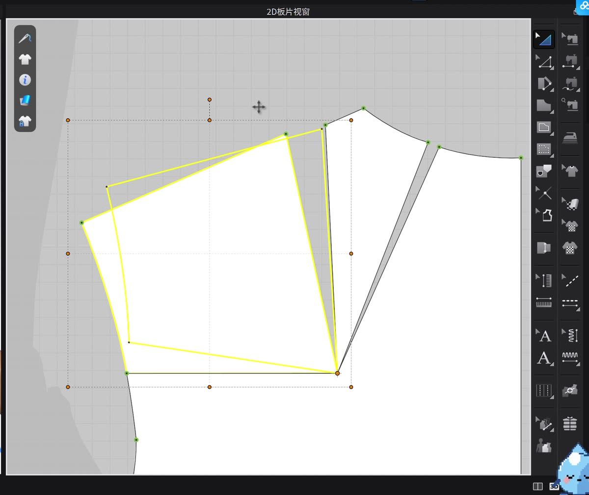
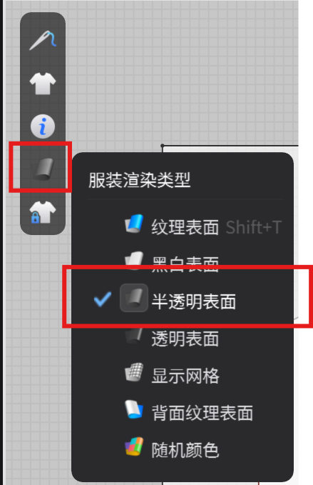
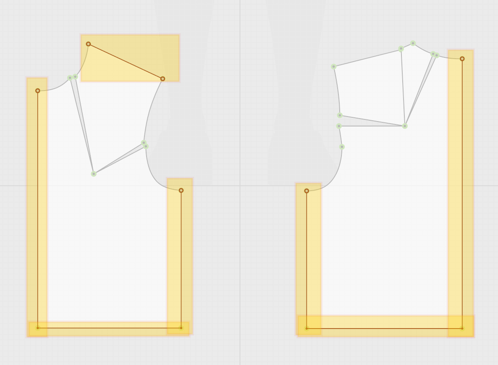
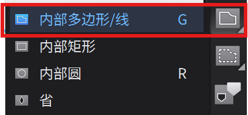
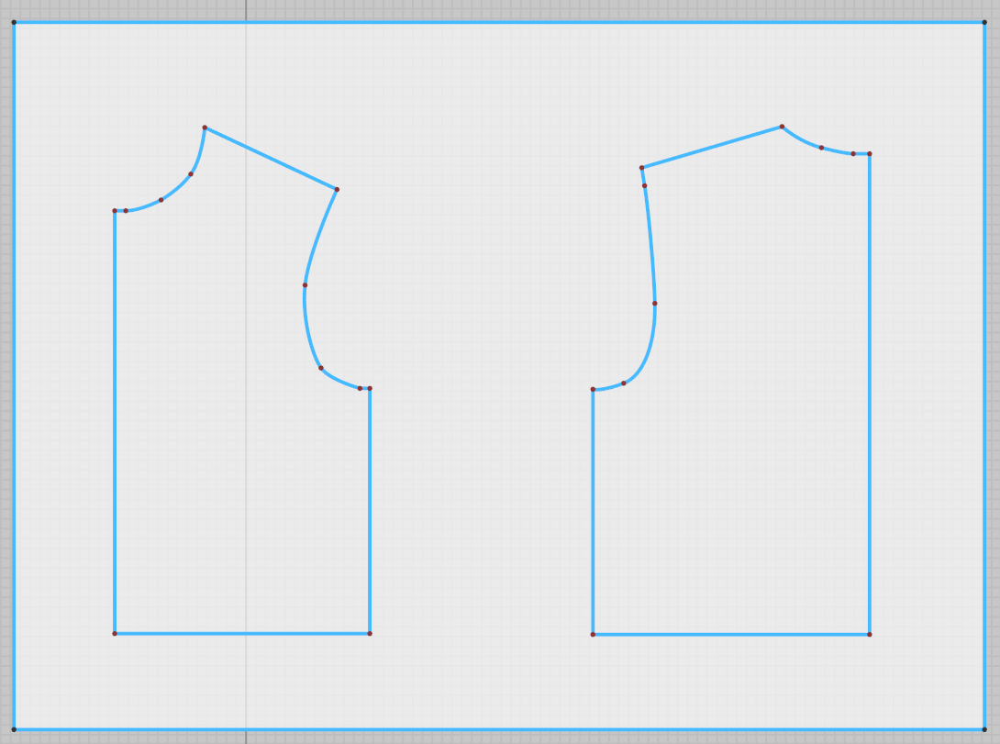

CLO3D / CHAPTER 02 · PATTERN MAKING
一起来做一件
男士衬衫吧
从男士基础版开始，转移省道的量，像用硫酸纸描图一样勾勒无省道上衣板，再切出板片、安排到模特身上并缝合模拟。跟着录屏理解每一步，设计自己的宽松衬衫版型。

准备版片与模特
从男士基础版开始
打开课程文件，里面已经有男士基础版片。先加入虚拟模特，再把版片放到模特身上对应的位置，为接下来的版型调整建立 2D 与 3D 的对应关系。
- 在「文件」菜单打开已有的男士基础版。
- 加入虚拟模特；选中板片，在 3D 窗口将它放到相应身体区域。录屏中演示了前片的安排。
接下来，开始改板片
这一步就是版型设计。录屏里的数值只是示范，不必完全照抄；理解松量从哪里收起、又在哪里打开，就能按同样的逻辑设计自己想要的衬衫。
胸省 → 领口
切出可旋转的小板片
希望领口多一点松量，就先从胸省省尖向领口切开，让这一块前片可以单独旋转。
- 按 G 使用「半片内部线」，从胸省省尖画到领口；双击结束线段。
- 选中这条内部线，右键选择「切断」。切开后得到一块可单独操作的小板片。
关闭一处 · 打开另一处
合胸省，打开领口
让原来胸省的两侧在省尖处对齐，再以省尖为中心旋转小板片。胸省收小的量，会转移到领口形成新的开口。
- 将原来的两个省道点尽量重合；拖动时按 Ctrl（Mac 按 Command）可细调位置。
- 双击旋转中心，将它移到省尖，再旋转板片。观察领口打开的宽度，按想要的松量决定旋转角度，无须照抄录屏数值。
肩省 → 领口与袖窿
为肩省转移做两处切口
前片的袖窿也需要松量。和前一步同理，以肩省省尖为起点，分别向领口与袖窿画内部线，再把两条线切开。
- 按 G，从肩省省尖向领口画线；再从同一省尖向袖窿画线。每条线双击结束。
- 分别选中两条内部线，右键「切断」，得到可围绕省尖旋转的小板片。
把松量放到想要的位置
先开领口，再转到袖窿
把切出的板片重新以肩省省尖对齐。先给领口留一点开口，再旋转左侧小板片，关闭肩省，让更多松量转移到袖窿。
- 对齐省尖，先旋转靠领口的小板片，留出少量领口松量。
- 再旋转左侧小板片，使肩省闭合，同时观察袖窿处打开的量。按希望的造型调整，不必追求录屏里的角度。
像硫酸纸一样描版
先勾勒直线轮廓
省道的量已经分配到领口和袖窿。现在在原板片上盖一片矩形，把调整后的轮廓转描到这片新板片上。
- 按 S 创建矩形，让矩形覆盖要描绘的板片；从左上角的「服装渲染类型」菜单选择「半透明表面」，使下面的原板片可见。
- 按 I 使用图示工具，依次点击原板片上相连、未被打断的直线边；按 Enter 结束。新矩形上会出现红色内部线。


补齐领口与袖窿
画曲线，完成无省道上衣板
直线确定后，用「内部多边形／线」补画领口、袖窿等曲线。点不用很多，重点是让线条顺着原板片的弧度走。
- 按 G 选择「内部多边形／线」，沿曲线依次落点；在需要弧度的位置按住鼠标拖动，调整曲线方向。
- 视图不够用时，按住鼠标滚轮拖动画布。曲线画完按 Enter 收尾，检查前后片轮廓是否顺畅衔接。


从描线到新裁片
切出无省道板片
描线完成后，旧板片只是参照。删去先前调整的板片，保留带有红色内部线的矩形，再沿新轮廓切出需要的板片。
- 删除先前调整的板片，只留下最后用于描线的矩形。
- 按 I 切换到前一步使用的工具，框选要切出的轮廓；右键选择「切断」。
- 删去矩形中多余的部分，只保留勾勒出的前后板片。
整理 2D 与 3D 工作区
对称关联，再安排到模特身上
先把新板片排整齐，再建立左右关联。3D 窗口中的安排点可以帮我们快速把板片放到模特对应的位置。
- 在 2D 工作区调整板片间距，框选前后两片；按 Ctrl／Command + D，将它们对称关联复制到另一侧。
- 打开 3D 窗口，并确认虚拟模特已开启「显示安排点」。
- 点击 2D 工作区中的一片板片，再点击模特身上对应的蓝色安排点；逐片完成安放。

确认缝线方向
缝合板片并开始模拟
板片放好后，先建立基本的缝纫关系。缝线的起止顺序会影响模拟结果，边缝边在 3D 窗口检查彩色缝纫线。
- 按 N 选择「线缝纫」，依次点击需要连接的两条边，大致缝合侧缝、后中、肩线和前中。
- 在 3D 窗口检查彩色缝纫线的走向：对应边之间应顺直连接，不要交叉；如果交叉，先调整缝线顺序。
- 按空格键开始模拟，观察板片如何缝合到模特身上。

观察宽松版型
硬化板片，检查轮廓
模拟后，柔软的面料可能暂时遮住版型线条。先把板片硬化，观察宽松上衣的整体轮廓。
- 按 Ctrl／Command + A 全选板片，在 3D 窗口右键选择「硬化」。
- 转动视角检查领口、肩线、袖窿与衣身的松量，判断轮廓是否符合自己的设计。
从基础版转移省道、描线并切出新板片，到对称关联、缝合与模拟，这是一套制作宽松无省道服装的基础流程。继续根据 3D 效果调整松量和细节，就能逐步发展自己的衬衫版型。
← 返回 Learn 书架